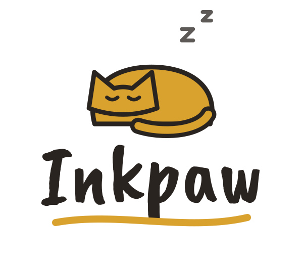
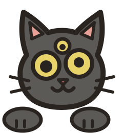

Wallpaper → palette
Pick a wallpaper and everything follows: borders, bar, menus, notifications, terminal, GTK apps and Firefox. Nine static themes, light and dark.
Inkpaw is a complete, modular Hyprland setup: bar, launcher, menus, quick panel, lock screen and an AI assistant — themed from your wallpaper and configured from one Settings app.


$ curl -fsSL https://raw.githubusercontent.com/Tataneeeeeeeeeee/Inkpaw/main/install.sh | bash
Asks before every step. Never touches ~/.config: Inkpaw is its own login session. Options & manual install →


Each part is a module you can switch off, every file is commented, and every value lives in hypr/settings.conf.
Pick a wallpaper and everything follows: borders, bar, menus, notifications, terminal, GTK apps and Firefox. Nine static themes, light and dark.
A GTK 4 window for every option — bar layout, fonts, gaps, monitors, keyboard, default apps, AI provider. Live, with a reset on every row.
Apps, calculator, files, emoji, clipboard, web and maps, desktop actions — one list with a titled section for each.
Wi-Fi, Bluetooth, sound per app, brightness with DDC/CI, battery and power mode, notifications, calendar, media — instant drop-downs.
A side window that docks beside your tiled windows. Conversations, full Markdown, Claude or any OpenAI-compatible API.
One concern per file, a module per line. ./test.sh verify checks every monitor profile and renders every theme in a throw-away copy.
Inkpaw installs as a second session in your login screen. At every login it builds its own config root — links to the repo for its apps, links to your real ~/.config for everything else — and starts Hyprland on it.
Your browser, editor and chat apps keep their settings. Your usual session is untouched. Remove one desktop file and Inkpaw is gone.


Flip light and dark with SUPER + CTRL + T. Prefer a quieter look? Switch the interface style back to the soft-glass default in Settings — your colors, wallpaper and windows stay as they are.